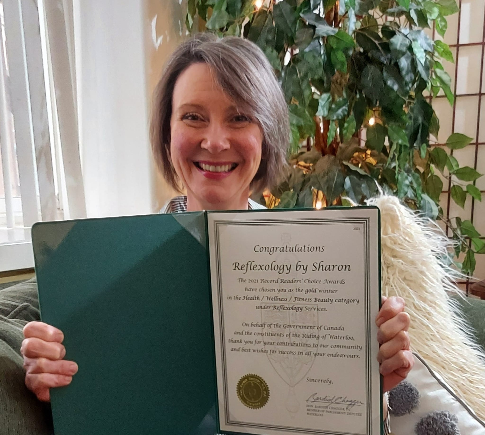

About Reflexology by Sharon
I'm Sharon,
I have lived in the KW area most of my life. I worked in aesthetics for 36 years. In 2015 I started noticing that
my client's needs were changing they weren't as concerned about how they looked as much as how they felt.
As more people became stressed, anxious and had more complaints about the pain I decided to look into something that
would be a nice compliment to my existing business. Reflexology was the perfect fit.
Once my feet were on this path there was no turning back. I couldn't get enough. I read everything I could get my hands on.
I certified with the Healing Arts Learning Organization and I am registered
with the RRCO (Reflexology Registration Council of Ontario)
I am now practicing reflexology on a full-time basis.
I was the proud Gold Winner for the "The 2021 Record's Readers' Choice Awards" for Reflexology.
Thank you everyone for voting for me.